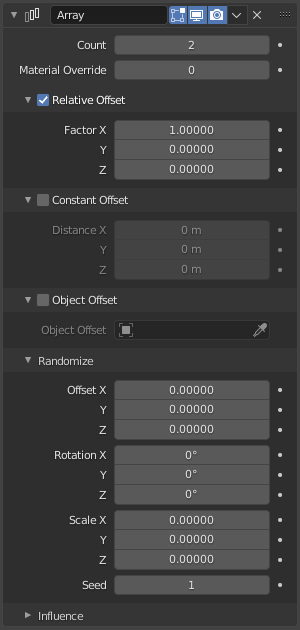

阵列修改器¶
Array 修改器创建基本对象的副本数组，每个副本都以多种可能的方式与前一个副本偏移。
用于创建复杂的重复绘图。
多个阵列修改器可以同时对于物体是活动的（例如，以创建复杂的三维构造）。
选项¶

阵列修改器。¶
- 数量
条斑总数。
- 材质覆盖
在重复笔画上使用的材质编号（0使用笔画原始材料）。
相对偏移¶
- X，Y，Z 轴向上的系数
向偏移量添加一个平移量，该平移量等于对象沿每个轴的边界框大小乘以一个比例因子。可以指定X、Y和Z比例因子。
恒定偏移¶
- X，Y，Z 轴向上的系数
将常量平移组件添加到复制对象的偏移量。可以指定X、Y和Z常数分量。
物体偏移¶
- 距离 X/Y/Z
将从对象（相对于当前对象）获取的变换添加到偏移量中。最好使用以初始对象为中心或靠近初始对象的空对象。